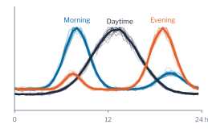
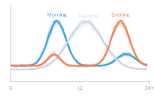
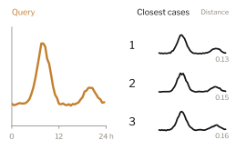
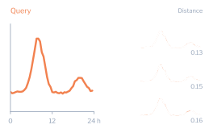
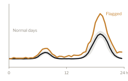
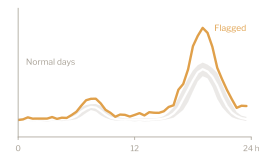

milia#
milia clusters, ranks and detects in time series: it groups the series that behave alike, finds the cases most similar to a given one, and flags the days that are not normal.
pip install "pundamilia[all]"


Cluster
Find the herds. Group the series that behave alike, decide how many groups the data supports, and see how far to trust them.
Read the user guide

Rank
Find the look-alikes. Retrieve the most similar cases to a series, rank them, and recommend the action that worked for them.
Read the user guide

Detect
Spot the odd stripe. Flag the days or windows that are not normal, at a false-alarm rate that you set.
Read the user guideGetting started
Install milia and cluster and flag a first set of series.
User guide
The ideas behind each task, with examples and their limitations.
API reference
Every public class and function, with its parameters and return values.
Contributing
How to set up a development environment, run the tests and propose a change.